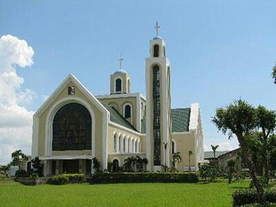
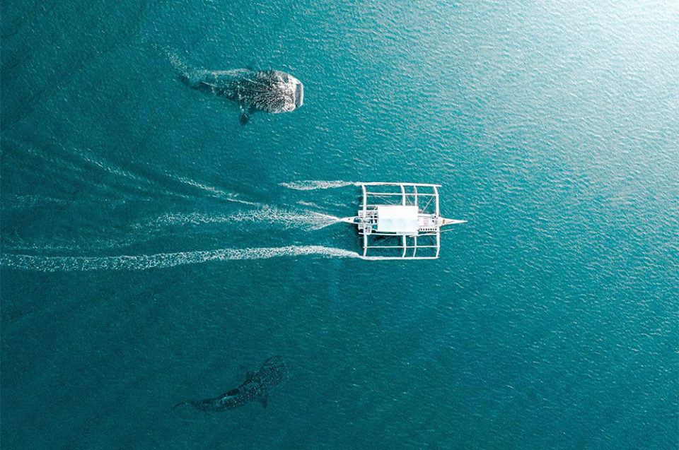
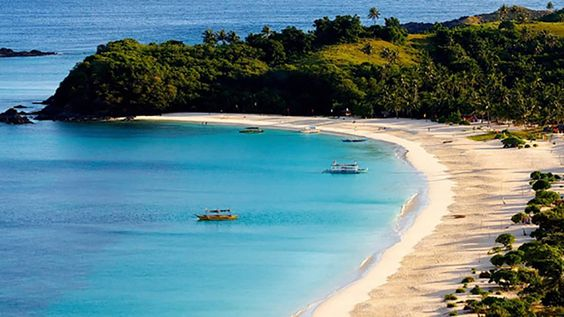
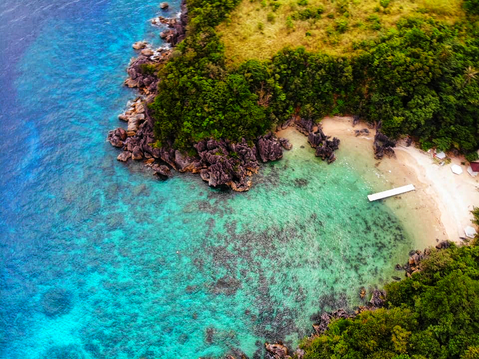

Here are some of the best tourist spot in Bicol Region that you can visit:
-
Mayon Volcano (Legazpi City, Albay)

Southeast Luzon in the Philippines is home to the active Mayon Volcano, which dominates Legaspi, Albay. Because of its symmetrical shape, it is referred to as the most perfect volcanic cone in the entire world. According to legend, the word "magayon," which means "beautiful" in Bicolano, gave rise to the place's name. This moniker is suitable given how gorgeous this natural setting is from every viewpoint. Most visitors to the Bicol Region named Mount Mayon as their primary target on their itineraries. On your trip to the spectacular volcano's foothills, you can also enjoy ATV riding.
-
Cagsawa Ruins (Daraga, Albay)

The Cagsawa Ruins are the remains of a Franciscan church that was constructed in the sixteenth century. It was initially constructed in the town of Cagsawa in 1587, but Dutch pirates burned it down and destroyed it in 1636. Fr. Francisco Blanco had it reconstructed in 1724, but on February 1, 1814, the Mayon Volcano erupted and completely devastated the Cagsawa Church along side the village of Cagsawa. The current location of the remains is Barangay Busay, Cagsawa, in the Philippine town of Daraga, Albay. One of the most well-liked tourist attractions in the region, it is a part of Cagsawa Park and is protected and managed by the municipal administration of Daraga and the National Museum of the Philippines.
-
Basilica of Our Lady of Peñafrancia (Naga City, Camarines Sur)
A minor basilica of the Roman Catholic faith that was situated in Naga City. It is one of Asia's largest Marian pilgrimage sites. It is the sole basilica in the entire Roman Catholic Archdiocese of Caceres as well as the Bicol Region. A statue of the Virgin Mary from 1710 is kept there. It was one of the most well-liked attractions in the region. Numerous factors make this basilica special. It is unique among all the basilicas in the Bicol Region and the Archdiocese of Caceres. The statue of the Virgin Mary, which Miguel de Cobarrubias personally commissioned to be made in 1710, is also preserved there. Take a look up at the stained glass windows and rafters. Each stained glass piece conveys a story.
-
Donsol Whale Shark Interaction Center (Donsol, Sorsogon)
The ideal location for butanding, or snorkeling with whale sharks, is Donsol in southeast Luzon. The largest school of whale sharks in the world may move here every year from November to May to feed on the abundant plankton and krill in the region. Whale shark interactions at Donsol are strictly controlled to safeguard the animals and their habitat. It is entirely up to chance whether they show up or not because they are not kept as pets and are not fed by the local fishermen. You are taken out to the bay in a small boat, where spotters signal for you to jump in and swim with the whale sharks as they approach the surface. Being so close to these massive animals is an amazing experience.which in Donsol are normally four to twelve meters long (though residents claim, of course, to have seen larger). They have the appearance of spotted submarines, but fortunately they are kind and remarkably graceful.
-
Calaguas Island (Vinzons, Camarines Norte)
Calaguas, often referred to as the Calaguas Islands, are a collection of islands situated in the Camarines Norte province of the Philippines. It consists of various minor islands as well as the major islands of Maculabo Island, Tinaga Island, and Guintinua Island. The ports in Paracale and Daet, Camarines Norte, provide access to the group of islands, which are located around 200 kilometers from Manila, the country's capital . While the minor islands of Maculabo is under the administrative control of the municipality of Paracale, the most of the islands are under the administrative control of Vinzons. There has recently been an increase in visitors to the island of Tinaga, which is home to the well-known long beach known as Mahabang Buhangin, despite the lack of accommodations. Backpackers and campers travel to Mahabang Buhangin to experience its powdery white sands.
-
Subic Beach (Matnog, Sorsogon)

Located at the southernmost point of Bicol and the gateway to the Visayas, is a very popular vacation destination in the region of Bicol. Whenever you are in Matnog, Sorsogon, you must visit Subic Beach. It is well-known for its pinkish and powdery white sand, also known as "La Playa Rosa" for the locals, which is best seen at sunrise and sunset, when the sun's gentle rays reflect the beach's vibrant hues. The distinctive color is a result of coral fragments that tiny marine organisms with red and pink shells have left behind./p>
-
Daraga Church (Daraga, Albay)

Please place the description here.
-
Ligñon Hills Nature Park (Legaspi City, Albay)

Please place the description here.
-
Sumlang Lake (Camalig, Albay)t

Please place the description here.
-
Caramoan Islands (Caramoan, Camarines Sur)
Please place the description here.